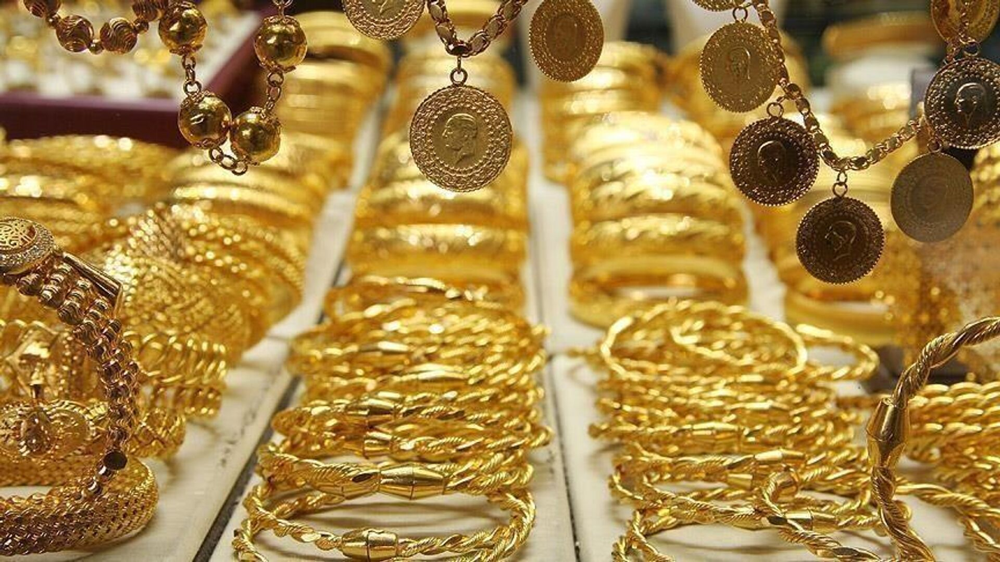
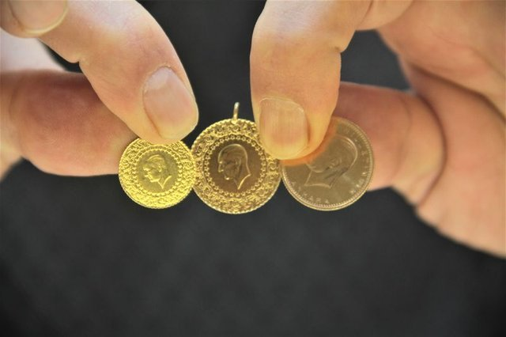
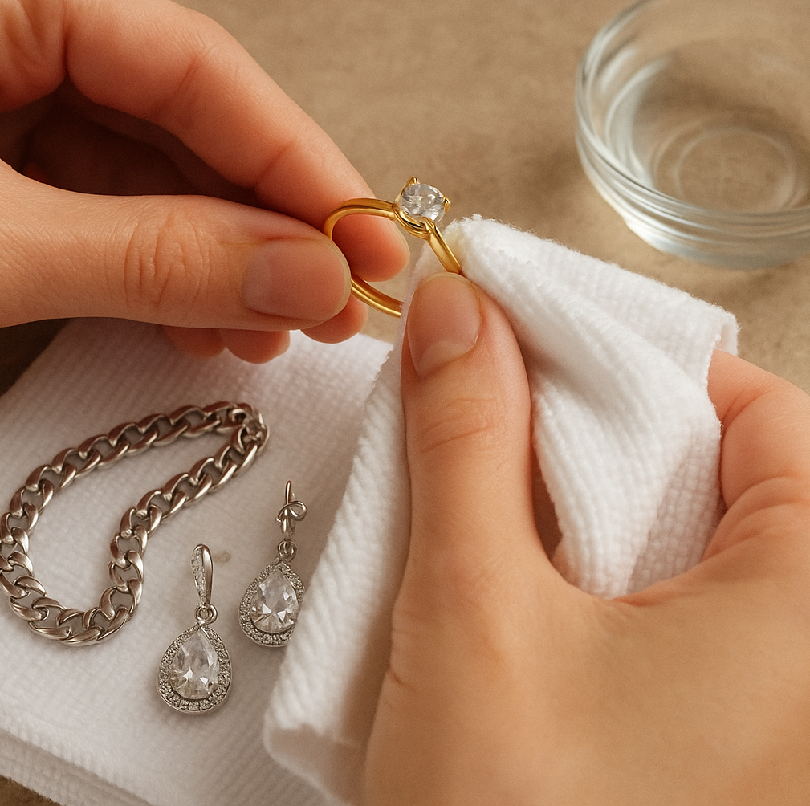
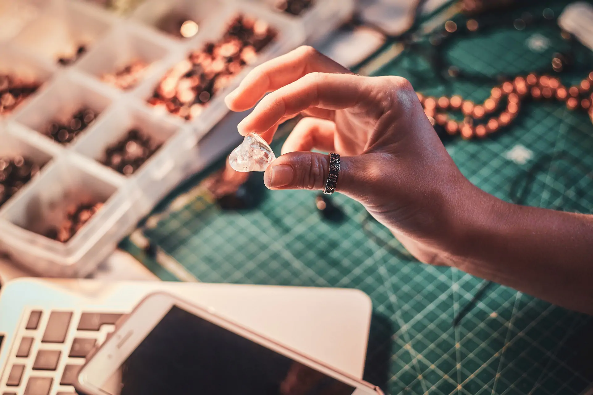

1. Tasarım & Çizim
Her şey bir hayalle başlar. Uzman tasarımcılarımız, modern CAD programları ile takının en ince detaylarını dijital ortamda çizer.

Her şey bir hayalle başlar. Uzman tasarımcılarımız, modern CAD programları ile takının en ince detaylarını dijital ortamda çizer.

Çizilen modelin 3D yazıcıdan mum örneği alınır. Ardından yüksek dereceli fırınlarda altın dökümü yapılarak takının iskeleti oluşur.

Ham haldeki altına ustalarımız elleriyle şekil verir. Pırlanta ve değerli taşlar, mikroskop altında titizlikle yerleştirilir.

Son dokunuşlarla takı parlatılır. Kalite kontrol ekibimiz her detayı inceler ve ürün vitrine çıkmaya hazır hale gelir.
